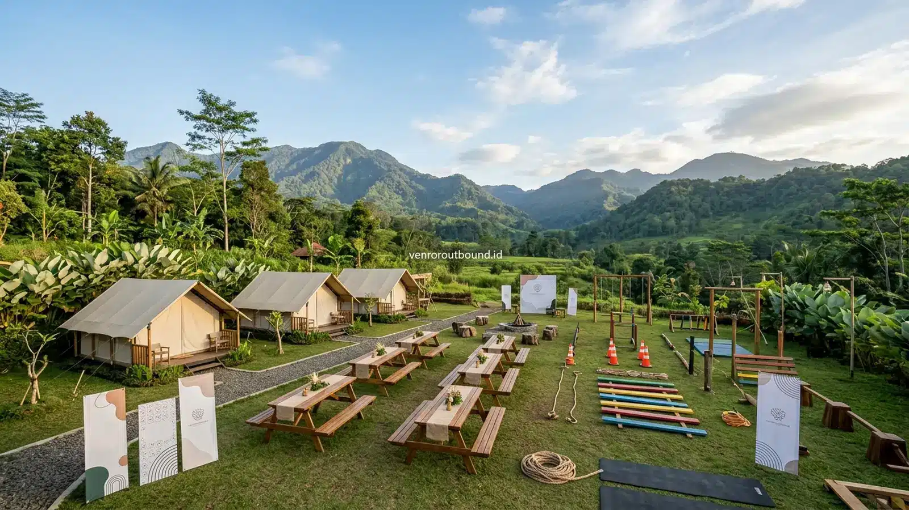

1. Mengenal Esensi Paket Outbound Corporate Synergy & Engagement 2026
Jawaban Singkat: Paket Outbound Corporate Synergy dirancang untuk mempererat sinergi kerja antar divisi dan mendukung motivasi kerja karyawan. Program dapat dikemas melalui simulasi interaktif yang menyenangkan dan memiliki ruang refleksi agar peserta menghubungkan pengalaman kegiatan dengan kebutuhan kolaborasi di tempat kerja. Desain modul dan durasi dapat disesuaikan dengan sasaran strategis instansi Anda melalui proposal terperinci.
Memasuki iklim bisnis tahun 2026 yang menuntut kecepatan adaptasi tinggi, sinergi lintas departemen menjadi pilar penopang daya saing perusahaan. Namun, rutinitas kerja harian yang padat kerap membatasi interaksi hanya pada komunikasi formal via pesan singkat atau surel birokratis. Sekat komunikasi ini lambat laun menurunkan keterikatan emosional dan memicu keengganan berkolaborasi.
Untuk menjawab kebutuhan tersebut, Vendor Outbound menghadirkan paket team building corporate bertajuk Corporate Synergy & Employee Engagement 2026. Program ini dirancang khusus bagi perusahaan, institusi BUMN, dan organisasi bisnis yang ingin menciptakan ruang perjumpaan positif di luar lingkungan kantor untuk memulihkan kehangatan kerja sama tim.
Pendekatan kami menitikberatkan pada perpaduan simulasi luar ruang yang memicu adrenalin sehat, dinamika koordinasi data paralel, dan sesi refleksi terpandu. Dengan mengedepankan prinsip keterbukaan, kegiatan ini membantu peserta merefleksikan pentingnya kontribusi setiap individu dalam menyukseskan sasaran bersama institusi.

Strategi Meruntuhkan Silo Mental Antar Divisi Perusahaan Lewat Experiential Games
Ketahui bagaimana simulasi paralel membantu mencairkan sekat informasi antar departemen kerja.
2. Hambatan Organisasi yang Menjadi Fokus Penyelenggaraan Program
Penyusunan modul corporate synergy tidak bersifat generik. Kami mengidentifikasi lima isu utama yang lazim dihadapi oleh pimpinan HR dan manajemen operasional sebagai sasaran intervensi simulasi:
A. Silo Mentality dan Ego Sektoral Antar Unit
Kecenderungan masing-masing departemen untuk memprioritaskan target unitnya sendiri tanpa memedulikan dampak beban kerja terhadap unit lain di hilir operasional.
Intervensi Program: Simulasi permainan paralel yang mewajibkan pertukaran sumber daya antar kelompok untuk mencapai kemenangan bersama.
B. Kejenuhan Rutinitas Kerja (Burnout) & Penurunan Motivasi
Tekanan beban kerja yang konstan tanpa jeda penyegaran mental dapat mengikis antusiasme kerja dan menurunkan inisiatif proaktif karyawan.
Intervensi Program: Aktivitas luar ruang di kawasan alam hijau yang asri dan menyenangkan untuk melepaskan stres psikologis secara sehat.
C. Sumbatan Komunikasi Horisontal & Vertikal
Rasa segan antara level staf dengan manajemen atau antar karyawan beda generasi yang menghambat keterbukaan dalam menyampaikan kendala kerja.
Intervensi Program: Permainan komunikasi dua arah tanpa atribut jabatan resmi, mendorong kesetaraan dialog dan keakraban manusiawi.
3. Tujuh Modul Inti Pembentuk Program Corporate Synergy
Setiap rancangan kegiatan dibangun melalui tahapan alur pengalaman yang logis dan saling terkait. Berikut adalah contoh tujuh modul inti yang dapat diintegrasikan ke dalam rundown acara Anda:
- Modul 1: Safety Briefing & Conditioning: Pengenalan protokol keselamatan lapangan, peregangan fisik terpandu, dan penjelasan tujuan strategis acara oleh perwakilan pimpinan perusahaan.
- Modul 2: Dynamic Ice Breaking: Permainan pembuka suasana berenergi tinggi untuk meruntuhkan kekakuan awal dan membagi peserta ke dalam kelompok kerja lintas departemen secara acak.
- Modul 3: Small Group Synergy Games: Latihan kekompakan dalam skala kelompok kecil untuk membangun rasa saling percaya dan mengenali pola komunikasi rekan satu regu.
- Modul 4: Cross-Functional Parallel Simulation: Skenario simulasi berskala besar di mana tiap kelompok memegang informasi terpisah dan harus menyatukan strategi untuk menyelesaikan misi utama korporasi.
- Modul 5: Ultimate Team Challenge: Misi puncak yang melibatkan seluruh peserta tanpa kecuali, menguji ketahanan kerja sama dan sinkronisasi ritme seluruh keluarga besar perusahaan.
- Modul 6: Facilitated Debrief & Reflection: Sesi dekonstruksi pembelajaran bersama fasilitator untuk mengekstraksi wawasan berharga dari dinamika yang terjadi di lapangan.
- Modul 7: Action Plan & Corporate Commitment: Perumusan komitmen bersama dan penandatanganan simbolik pakta kolaborasi sebagai bekal kembali ke rutinitas kerja kantor.

4. Komparasi Format: Skenario 1-Day Intensif vs 2-Day Plus Menginap
Setiap instansi memiliki pertimbangan berbeda terkait alokasi waktu operasional kantor dan anggaran. Oleh sebab itu, kami menawarkan dua opsi format pelaksanaan yang fleksibel:
Format 1-Day Intensif (One Day Program)
Cocok bagi perusahaan yang ingin memaksimalkan efisiensi waktu tanpa menginap. Jadwal dirancang padat namun tetap menyenangkan:
- Pagi (08.30 - 12.00): Registrasi, briefing, ice breaking berenergi, dan sesi small group synergy.
- Siang (12.00 - 13.00): Istirahat, makan siang prasmanan bersama, dan ibadah.
- Siang-Sore (13.00 - 16.00): Simulasi paralel lintas divisi, ultimate challenge, sesi debrief refleksi, dan penutupan.
Format 2-Day Plus Menginap (Overnight Retreat)
Sangat ideal untuk membangun keakraban emosional mendalam di resort sejuk pegunungan Batu Malang atau Trawas:
- Hari 1: Kedatangan & check-in resort, sesi outbound team building terstruktur, makan malam gala dinner / malam keakraban, dan sharing session santai.
- Hari 2: Senam pagi kebugaran di alam bebas, fun teamwork games ringan atau jelajah wisata alam sekitar, evaluasi komitmen akhir, dan persiapan kepulangan.
5. Tabel Komparasi Fitur Paket Corporate Synergy 1-Day dan 2-Day
Berikut adalah perbandingan fitur komponen program sebagai gambaran acuan perencanaan bagi tim panitia HR:
| Komponen Program | Paket 1-Day Intensif | Paket 2-Day Plus Menginap |
|---|---|---|
| Alokasi Waktu | 1 Hari Kerja (±7–8 Jam Efektif) | 2 Hari 1 Malam (Menginap di Venue) |
| Simulasi Team Building | ✓ Termasuk (Fokus Sinergi) | ✓ Termasuk (Fokus Sinergi & Leadership) |
| Experiential Games Lintas Divisi | ✓ Termasuk | ✓ Termasuk (Modul Lebih Kompleks) |
| Sesi Debrief & Refleksi | ✓ Termasuk | ✓ Termasuk (Refleksi Malam & Lapangan) |
| Akomodasi Hotel / Resort | Tidak Wajib (Pulang Hari) | Dapat Disesuaikan dengan Standar Kamar |
| Konsumsi & Coffee Break | Makan Siang + Coffee Break | Fullboard (Makan Pagi, Siang, Malam, Snack) |
| Penyesuaian Modul | Custom Sesuai Target HR | Custom Sesuai Target HR |
| Rangkuman Observasi Evaluasi | Sesuai Kesepakatan Paket | Sesuai Kesepakatan Paket |
*Catatan Transparansi: Tabel merupakan contoh struktur program. Fasilitas, aktivitas, lokasi, konsumsi, akomodasi, dan komponen lainnya harus dikonfirmasi berdasarkan proposal final.
Dapatkan Penawaran Paket Corporate Synergy
Hubungi WhatsApp Vendor Outbound untuk mendiskusikan penawaran paket corporate synergy sesuai kebutuhan dan anggaran instansi Anda.
Hubungi via WA +62 822112219096. Fleksibilitas Kustomisasi Program Sesuai Sasaran Manajemen
Tidak ada dua perusahaan yang memiliki kultur organisasi persis sama. Oleh karenanya, Vendor Outbound membuka ruang kustomisasi modul yang didasarkan pada parameter berikut:
- Profil dan Rentang Usia Peserta: Penyesuaian intensitas fisik permainan apakah melibatkan staf muda dinamis atau jajaran senior eksekutif yang membutuhkan game santai berbobot strategi.
- Isu Hubungan Internal Spesifik: Fokus apakah ingin membedah sekat komunikasi antar divisi spesifik atau mempercepat integrasi pasca-merger anak perusahaan.
- Preferensi Lokasi Venue: Pilihan suasana pegunungan sejuk di Batu Malang, suasana hutan pinus Trawas Mojokerto, atau venue hotel bintang di Surabaya.
- Rasio Fasilitator Terhadap Peserta: Menjaga kualitas interaksi dan keamanan dengan rasio fasilitator yang memadai untuk setiap kelompok kerja.

Mengukur Efektivitas Outbound Dalam Meningkatkan Retensi & Engagement Karyawan
Ketahui instrumen evaluasi Before-During-After dan matriks kualitatif penilaian kegiatan.
7. Alur Pemesanan dan Penyusunan Proposal Bersama Tim Kami
Untuk memastikan transparansi dan kemudahan koordinasi bagi panitia internal, berikut langkah penyusunan agenda corporate gathering bersama Vendor Outbound:
- Konsultasi Kebutuhan Awal: Hubungi tim representatif kami melalui WhatsApp untuk menyampaikan gambaran acara, jumlah peserta, rencana tanggal, dan tujuan utama kegiatan.
- Penyusunan Draf Proposal: Tim konsultan kami menyusun rincian konsep program, rekomendasi venue, simulasi rundown acara, dan opsi penawaran biaya secara transparan.
- Diskusi & Penyesuaian Modul: Sesi koordinasi untuk menyelaraskan detail modul permainan dengan kebutuhan spesifik tim HR atau manajemen operasional Anda.
- Finalisasi Kesepakatan & Eksekusi: Konfirmasi proposal final, penandatanganan kesepakatan kegiatan, dan persiapan teknis lapangan secara terpadu oleh tim operasional kami.
8. Panduan Memaksimalkan Nilai Investasi Corporate Gathering
Agar anggaran kegiatan menghasilkan dampak positif yang optimal bagi budaya kerja organisasi, perhatikan beberapa tips praktis berikut:
- Komunikasikan Tujuan Kepada Peserta: Sampaikan kepada seluruh karyawan bahwa acara ini bukan sekadar liburan santai, melainkan momentum bersama untuk mempererat kekompakan keluarga besar institusi.
- Hindari Pengelompokan Berdasarkan Meja Kerja: Acak anggota kelompok sejak awal agar karyawan berbaur dengan rekan kerja dari departemen yang jarang mereka jumpai di kantor.
- Dorong Keterlibatan Jajaran Manajemen: Kehadiran para pimpinan yang turut serta bermain dalam pakaian kasual di lapangan terbuka akan meruntuhkan jarak psikologis secara signifikan.

Katalog Paket Outbound Corporate Gathering & Employee Gathering
Eksplorasi ragam paket outbound terpadu di berbagai destinasi pilihan Jawa Timur.
Kesimpulan: Membangun Sinergi untuk Pertumbuhan Berkelanjutan
Mempererat sinergi tim kerja bukanlah proses instan, melainkan rangkaian investasi pada relasi antar manusia di dalam organisasi. Melalui paket team building corporate yang terarah, perusahaan Anda dapat menciptakan memori positif bersama, mencairkan sekat sektoral, dan membangun kembali rasa saling percaya. Diskusikan rencana kegiatan Anda bersama Vendor Outbound untuk mewujudkan agenda gathering yang berkesan dan bermakna.
Pertanyaan Seputar Paket Outbound Corporate Synergy

Arby Ardiansyah
Arby Ardiansyah merupakan penulis konten Vendor Outbound yang berfokus pada topik outbound perusahaan, team building, leadership, employee engagement, dan experiential learning.